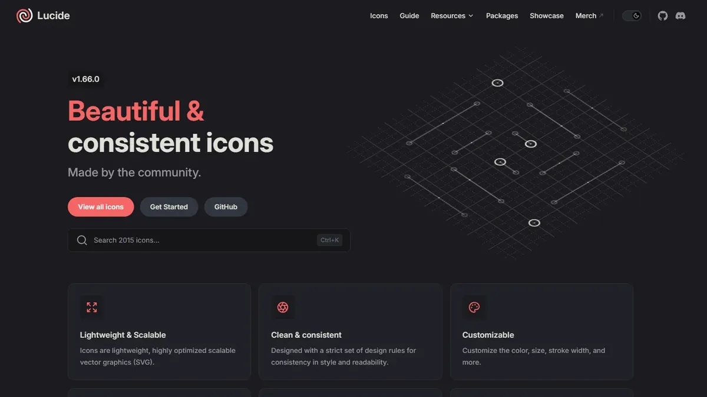
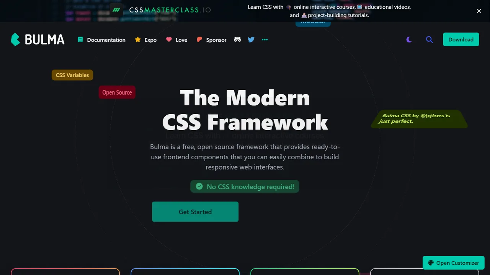
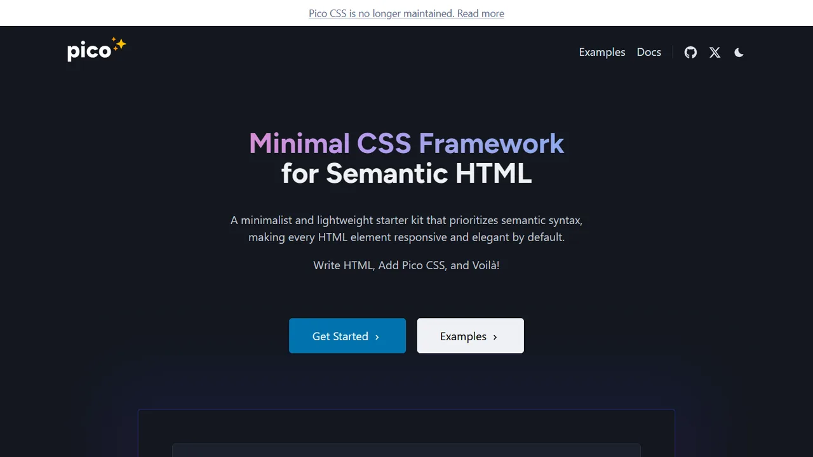

Featured & Top Picks
Highest-rated, open-source, and standout CSS & UI Component Libraries tools curated by the community.

★ Top ChoiceLucide Icons
Clean, customizable open-source icon set with lightweight vanilla JavaScript and SVG support.

★ Open Source PickBulma
Modern CSS framework based on Flexbox with 100% CSS and zero JavaScript dependencies.

★ Community RecommendedPico CSS
Minimal and semantic classless CSS framework that styles pure HTML automatically.
All CSS & UI Component Libraries Tools (4)
Explore, search, and filter zero-backend services and developer APIs.
Clean, customizable open-source icon set with vanilla JS & SVG support
CSS & UI Component Libraries Developer FAQ
Common architecture questions, security guidelines, and implementation tips for static websites.
How do I integrate css & ui component libraries tools into a static website?
All tools featured in the CSS & UI Component Libraries category are designed specifically for zero-backend architecture. You can integrate them directly into your static HTML pages using simple script tags, embed snippets, CDN assets, or client-side JavaScript fetch calls without configuring backend servers.
Do css & ui component libraries services require a dedicated database or backend?
No. The philosophy of StaticStack is zero backend bloat. Services in this category either run entirely client-side in the browser or manage their own scalable cloud APIs, leaving your static hosting environment completely serverless and hassle-free.
Are free or open-source css & ui component libraries options available?
Yes! StaticStack highlights open-source and free-tier options for every category. You can use the filter buttons above to instantly filter CSS & UI Component Libraries tools by Open Source, Free, Freemium, or Paid pricing models.
How do I keep API keys secure when using third-party static site services?
Most modern static web services provide public, read-only client API keys designed to be safely embedded into frontend HTML. For sensitive operations, you can route requests through edge workers (like Cloudflare Pages Functions) where secret keys remain safely hidden from the browser.
Explore Related Categories
Complementary tools and services to expand your static web architecture.
Connect with fellow developers in the StaticStack Community. Share code snippets, ask implementation questions, and showcase your static projects.